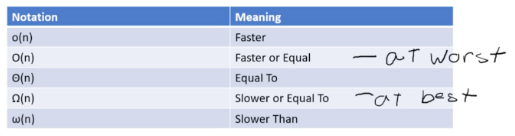
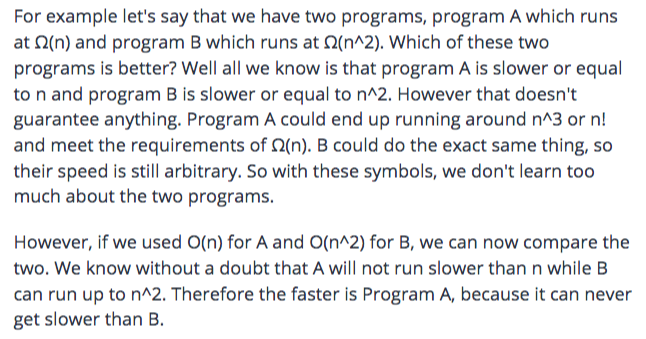
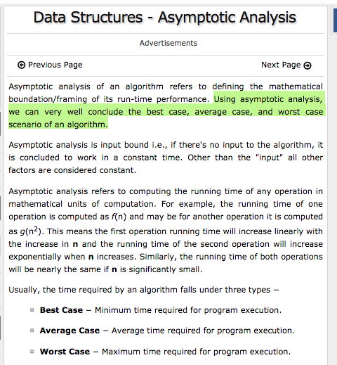
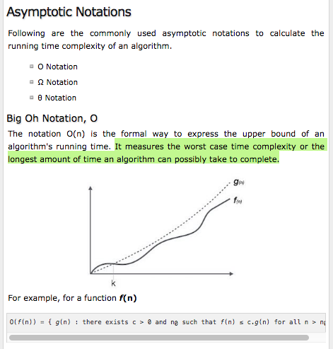
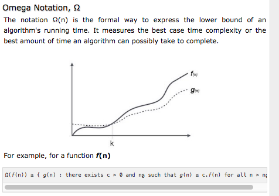
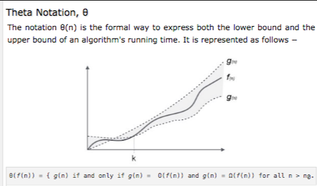

The asymptotic upper limit of a function, or upper bound, of the complexity in the WORST case, helping to quantify performance as the input size becomes ARBITRARILY LARGE.
aka Big O Asymptotic Analysis / Computational Complexity Analysis.
used for algorithm performance comparison - an equation that describes how the run time scales with respect to some input variables.
specifically describes the worst-case scenario - or the efficiency of SETTING + GETTING data from a DATA STORE (e.g. In-memory, database, sql, nosql). Used to describe the execution time, or the space used (e.g. memory or on disk), of an algorithm.
allows you to compare different algorithms; denoting run times.
is represented as a function of n - where n this is usually the # of input / output values.
the reason why n is used is because it will show you how the program will react to increasing amounts of data. (You can’t predict how many pieces of data your program will require, so you compare it along the graph.)
*example: // flipping a coin, b/c BigO assumes WORST case scenario, so you could flip forever (theoretically) if you expected to get a heads / tails.
“Greek Letter” Notation
Almost all people are Big O(slowest person alive), while almost no one is Big O(fastest person alive), except for the actual fastest person alive.
as below:
Other Notations
you usually don’t use n by itself; typically, you tie it together with a Freek letter to give it some context. Rarely does your program operate at the same timing for every single step. So instead of having exact values, you look at them in boundaries., or cases in which the are greater, less than, or rqual:
Greek Letter NotationGreek Letter Notation
Greek Letter NotationGreek Letter Notation
Greek Letter Notation
Greek Letter Notation
Greek Letter Notation
Greek Letter Notation